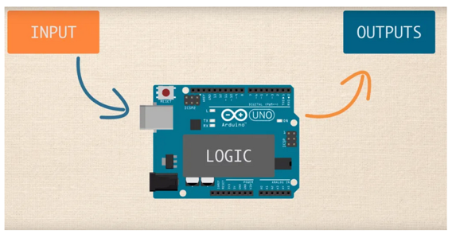
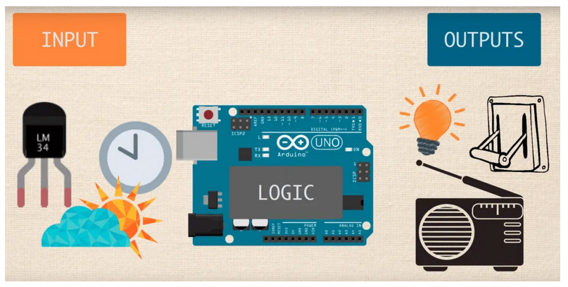

What is a microcontroller?
Wikipedia “microcontroller”:
A microcontroller (MCU for microcontroller unit) is a small computer on a single metal-oxide-semiconductor (MOS) integrated circuit (IC) chip. A microcontroller contains one or more CPUs (processor cores) along with memory and programmable input/output peripherals.
To make things simple, it’s a small computer capable of receiving an input then performing on it logic, and then giving an output. A simple example for a use of a microcontroller could be: regulating the room temperature by turning on and off the heater according to the temperature in the room. In this situation, there will be a temperature sensor (input device) and an electronic switch (output device) connected to the microcontroller. The controller will be loaded with code that tells it when to turn on or off the heater (via the switch) according to the temperature perceived.


What is Arduino?
Arduino is a name of a company that makes user-friendly versatile microcontrollers. The MCUs they make are called “Arduino Uno”, “Arduino Mega”, “Arduino nano”, etc. They are widely used and have a lot of documentation and information online.
So what Arduino will we be working with this semester?
Actually, we won’t work with an Arduino MCU, instead, we will be using an ESP32 MCU that utilizes the same coding environment as Arduino. The reason for that is ESP32 has built-in wifi and Bluetooth which will be a great advantage for us. The ESP32 is cheap (~5$ per board) and has better specs than the Arduino boards: faster processer more RAM etc. Like Arduino, ESP32 has a lot of documentation and information online. As a side note, we do have a few Arduinos in the lab for troubleshooting when things don’t work with the ESP32 boards or for projects that don’t need wifi.
Useful links
The world of MCUs has great support online. You actually don’t need this course to learn it… We are only here to guide you and help with the first steps. SO below are some usful links to websites/Youtube channels that provide excellent information:
Arduino syntax and coding:
Tutorials by sensor manufacturers:
Project ideas:
Arduino beginners course:
Examples of good Youtube channels: